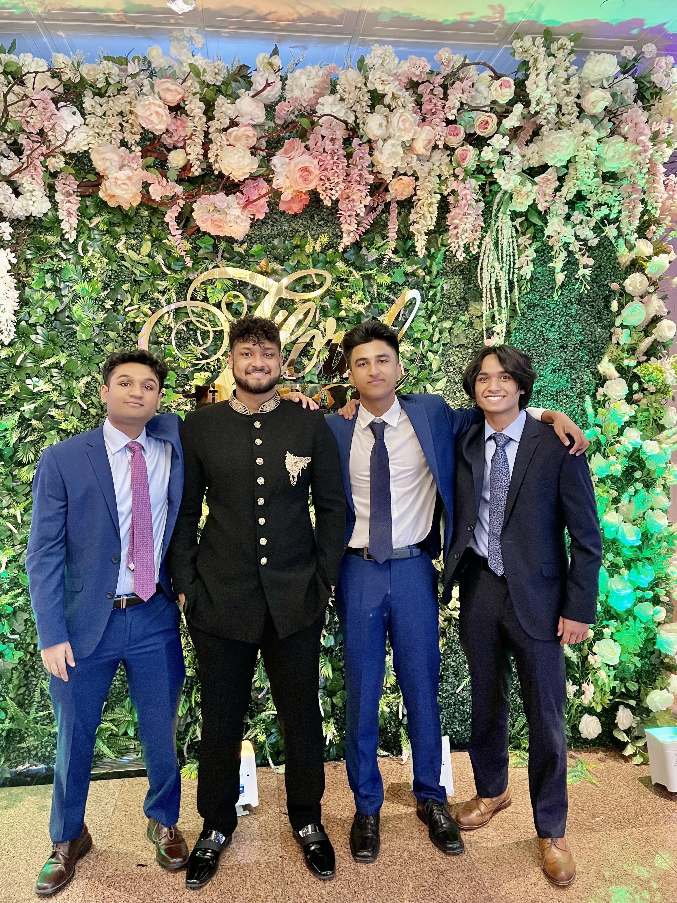
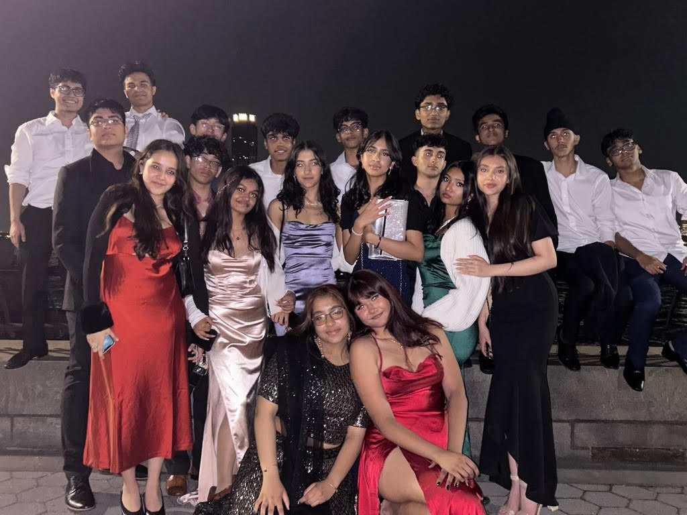

Sadat Ahmed

I was born in Bangladesh and I immigrated to the U.S. when I was three years old. As an immigrant, my parents instilled into me the idea that I have to work very hard and become rich and successful in the future. Due to these goals, I became very stem-oriented and I plan to study computer science in the future. I also really enjoy making music because ever since I was young, rap music has always helped me get in touch with my emotions and feel something. I am also Muslim boy of strong faith and I feel like this defines who I am.
I believe quality time with the ones you love is one of the most important things in this world. I love spending time with my friends because they make me feel supported and I feel like I connect with them a lot. I also really enjoy talking to my cousins because they are a bit older than me so it's fun talking to the people that I will turn out to be like. I love talking to the adults as well because it is fun joking around with them.
